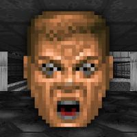
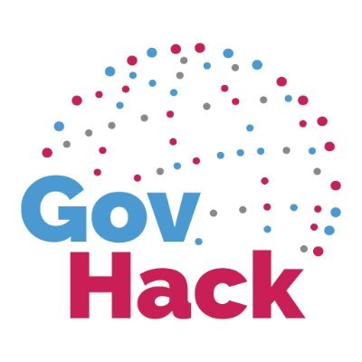
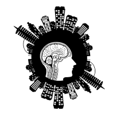

Luke is an enthusiastic Amateur Radio operator and an active Scout Leader. When he's not participating as a Leader of Youth in Scouting, or planning an exciting STEM activity for the kids, he can be found tinkering with electronics, exploring the great outdoors on a long drive, catching up with mates over a cuppa, or hanging out with family and friends.
Interest in IT
-

1993
When did your interest in Information Technology start?
As with most Gen Y's, Luke's interest in Information Technology was ignited by gaming. Luke spent hours as a toddler playing Civilization 1, Wolfenstein, and Doom. Nightmares occurred, but a love of technology and problem solving began.
At the age of 6, Luke successfully (accidentally) formatted his own hard drive when he was curious about the BIOS settings of his computer.
At age 8, he and a friend took apart a computer to see how it worked. Unfortunately, it did not work when they attempted to rebuild the machine. "Extra" screws were also left over after the rebuild...
-

2015 - 2018
Open Knowledge, GovHack, HealthHack
Luke's thirst for "techknowledgy" was quenched through regular attendence at OpenKnowledge Foundation Australia Meetups, where he pursued his interests in Open Source software.
He also participated in HealthHack 2016, assisted as a volunteer at GovHack in 2016 and 2017, and led the GovHack Melbourne 2018 hackathon site with over 200 attendees participating - the largest GovHack site in Australia.
In this time, Luke practiced project delivery, learnt to build static websites, and enhanced system administration skills to maintain support systems.
-
2020
Why RMIT?
Thanks to COVID-19, a flexible workplace, and Open Universities Australia, Luke was able to explore a new career path.
RMIT's repuation as a leader in the field of Information Technology and course availability was an easy decision to make when considering where to get ahead and stay ahead in an ever-changing world.
Luke has spent many years following a self-taught approach to programming and system administration. He hopes that the experience of studying at RMIT provides insight and access to industry best practice, in a guided, methodical, and supportive approach that formal education has to offer.
-

2020
Expectations from study
Luke is looking forward to learning about different programming languages and their uses, considerations for system design and implementation, and tools and processes commonly used in the industry.
He is keen to learn about industry systems, how they're best integrated, and how to approach solution delivery for organisations in a collaborative and co-ordinated manner.
Luke enjoys bringing conceptual ideas to life and is hoping to discover opportunities for implementing creative solutions to technical problems.
Ideal Job
About the role
A solutions architect is responsible for co-ordinating the design, layout, resources, tools, and infrastructure required by an organisation to meet its business needs. They work as a facilitator of business functions by scoping and developing technical solutions for the business.
They must consider the challenge of balancing current infrastructure dependencies that the business relies on, and ensure backwards compatibility and growth opportunities are present when compiling solutions for the future.
Luke's appeal for the role is the challenge of managing stakeholders across different parts of the business to provide the right solution to challenging problems. A Solutions Architect should be able to work with all types of people, and be open to new ideas, new ways of thinking from diverse business areas to get the best results for a truly dynamic system.
Qualifiations Required
A Solutions Architect requires a tertiary degree in a relevant discipline, such as:
- Information Technology
- Computer Science
- Software Engineering
Note that post-graduate qualifications and specilized certification may also be required.
Solutions Architects are required to have significant experience in a systems engineering environment, thorough knowledge of business solutions and resources and tools available to be used in solutions, and a working knowledge of how they are requried to operate with other systems.
They must also be familiar with relevant technological protocols (such as https for web development) and specialist languages (such as PHP, Node.js, etc) to ensure they understand the interactive relationships between the business needs and its technological solutions.
(How to become a Solutions Architect - Salary, Qualifications & Reviews – SEEK, 2020)
Relevant Qualifications
Luke has intermediate experience in delivering solutions for organisations. While not tertiary qualified, Luke has informally learnt some of the following skills:
- Web Development
- Server System Administration
- Online solution design and development, particularly the National Scouts Australia JOTA portal
Luke has worked on a few information system projects to co-ordinate information for organisations. He has significant leadership experience, from small group projects to large scale event management.
Luke has also worked within the financial services sector, where he was heavily involved in executing business processes, and developed an understanding of their needs, value, and provided feedback for improvement to assist business efficiency and quality of service.
Luke has recently been involved in frontline Information Technology delivery in a professional (rather than personal) capacity, and has assisted the organisation to prepare for remote working solutions that arose during the COVID-19 crisis earlier this year, by configuring and installing systems and software for use remotely by employees.
Developing skills for Solution Architecture
Luke has started a Bachelor of IT for which this page has been constructed. While studying, Luke works with the IT support team of his employer, and is developing skills in responding to the businesses needs as changes are required. In coming years, Luke is hoping to branch into a more technical role to gain experience as a system engineer, facilitating the growth and development of client solutions under skilled leadership in the industry.
Luke may also complete certifications, such as a Cisco networking certification, to gain knowledge and a new skillset to meet the needs of future prospects. He also intends to continue learning PHP, and eventually master JavaScript to ensure that he has a full-stack developer kit available for future projects.
Personal Profile
Myers-Briggs
INFP-T
The Mediator
"Mediator personalities are true idealists, always looking for the hint of good in even the worst of people and events, searching for ways to make things better. While they may be perceived as calm, reserved, or even shy, Mediators have an inner flame and passion that can truly shine. Comprising just 4% of the population, the risk of feeling misunderstood is unfortunately high for the Mediator personality type – but when they find like-minded people to spend their time with, the harmony they feel will be a fountain of joy and inspiration."
as described by 16personalities.com. Read more here.
(Introduction | Mediator (INFP) Personality | 16Personalities, 2020)
Luke the Mediator
As the profile fits, Luke is considerate of the best possible outcomes from a given situation, not just for the task at hand but for the people involved. Inspired and eager, Luke enjoys working in an energetic environment where each participant is included and involved in making something together from the sum of their capabilities. Luke is best paired with team members who have the ability to balance the imagery and idealistic concepts that Luke can be enthusiastic about, and can use support of others who are more tactical, detailed, or methodical in their deliberations to achieve results.
Learning Styles
"If you are an auditory learner, you learn by hearing and listening. You understand and remember things you have heard. You store information by the way it sounds, and you have an easier time understanding spoken instructions than written ones. You often learn by reading out loud because you have to hear it or speak it in order to know it. As an auditory learner, you probably hum or talk to yourself or others if you become bored. People may think you are not paying attention, even though you may be hearing and understanding everything being said."
"If you are a visual learner, you learn by reading or seeing pictures. You understand and remember things by sight. You can picture what you are learning in your head, and you learn best by using methods that are primarily visual. You like to see what you are learning. As a visual learner, you are usually neat and clean. You often close your eyes to visualize or remember something, and you will find something to watch if you become bored. You may have difficulty with spoken directions and may be easily distracted by sounds. You are attracted to color and to spoken language (like stories) that is rich in imagery."
as described by educationplanner.org. Read more here.
(What's Your Learning Style? The Learning Styles, 2020)
Auditory-Visual Learner
As an Auditory-Visual Learner...
Luke relies on what he sees and what he heres to comprehend information. As both Audible and Visual cues are intsructive, a combination of both allows him to best digest and consider information presented to him, usually in tandem. While he is less likely to engage in kinetic learning styles, he's more than happy to engage with them and use them to share concepts and ideas in this method.
DISC profile
Dominant
"Although “D” type people are direct and straightforward, they are not necessarily hasty. They think things through and do not dive head-in so that later, they can have regrets. A “D” personality will take responsibility for their action, as they have taken the best possible course of action. Other traits include: assertive, dynamic and efficient. Such an individual will not lose time to get to the bottom line. Highly motivated, ambitious and bright, this person will play detective as long as it takes in order to solve the problem!"
as described by onlinepersonalitytests.org. Read more here.
(Dominance - Online Personality Tests, 2020)
A dominant presence...
While the description of a Dominant personality under the DISC discipline, Luke's interactions are delivered in a leadership capacity focused on the success task at hand. Luke has learnt to take a step back when passionate and enthusiastic about a situation, and let the natural flow of collegiate decision making assist the group to achieve its desired results. Luke looks for teams that are filled with energy, are passionate, and enthusiastic about the potential for solutions.